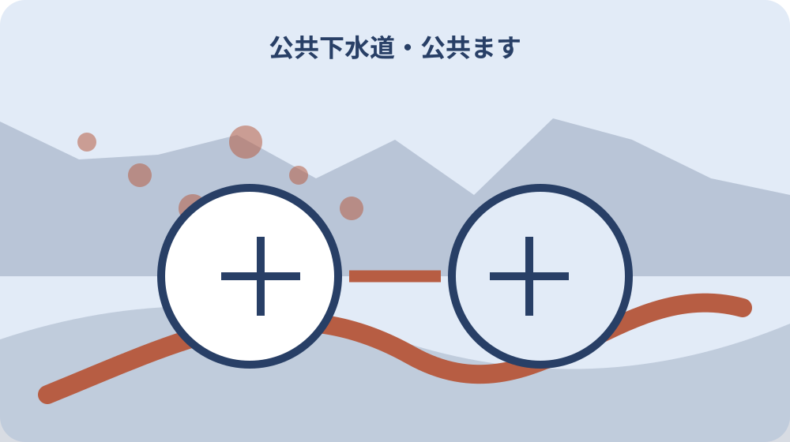

先に結論を確認する
この記事の答え：対象区域という情報だけで接続済みと判断せず、供用通知、公共ます、宅内排水設備、指定工事店を照合したいため、対象、基準日、公式資料、未確認事項を最初の一行へ置きます。
森町で最初に照合する条件：森町公式の二つの異なる案内を2026-08-13に確認する
住所と供用通知を同じ行へ置く
『住所と供用通知を同じ行へ置く』を調べる場面では、住所と供用通知を同じ行へ置くでは、まず町は下水道管工事後に使用可能となった区域へ供用開始を知らせます。『住所と供用通知を同じ行へ置く』を調べる場面では、この事実を出発点に、対象者・対象物・確認日を同じ行へ置きます。『住所と供用通知を同じ行へ置く』を調べる場面では、森町の公共下水道を供用通知・公共ます・宅内工事で確認するの判断を口頭だけで進めず、根拠となるページ名と更新日も併記してください。
『住所と供用通知を同じ行へ置く』を調べる場面では、公式案内の共通条件と、手元の個別事情を二列に分けます。『住所と供用通知を同じ行へ置く』を調べる場面では、町は下水道管工事後に使用可能となった区域へ供用開始を知らせますという根拠は左へ、住所と供用通知を同じ行へ置くでまだ調べる対象は右へ置き、ページ本文から読み取れない事情を補いません。
『住所と供用通知を同じ行へ置く』を調べる場面では、原資料の名称と確認日を記したら、数字・人名・物件番号を原文のまま転記します。『住所と供用通知を同じ行へ置く』を調べる場面では、公共ますの位置を現地で確かめるへ移る前に、森町へ尋ねる質問を一つだけ決め、回答欄を空けて待ちます。
『住所と供用通知を同じ行へ置く』を調べる場面では、この節は、対象が一意に決まり、根拠URLへ戻れ、次の担当が読める状態で終了です。『住所と供用通知を同じ行へ置く』を調べる場面では、住所と供用通知を同じ行へ置くに未確認があれば、結論欄ではなく再確認日の欄を埋めます。
『住所と供用通知を同じ行へ置く』を調べる場面では、1番目の確認として『住所と供用通知を同じ行へ置く』を保存するときは、根拠となる『町は下水道管工事後に使用可能となった区域へ供用開始を知らせます』と今回の対象を一本の線で結びます。『住所と供用通知を同じ行へ置く』を調べる場面では、資料の写しには取得日、個別メモには記入者、問い合わせ結果には回答日を付け、次に読む人が公式事実と家族の判断を取り違えない状態にしてください。
公共ますの位置を現地で確かめる
『公共ますの位置を現地で確かめる』用の一件表に、手元の書類を開いたら、公共ますの位置を現地で確かめるに関係する名称、番号、日付を原文どおり写します。『公共ますの位置を現地で確かめる』用の一件表に、略称や家族の呼び名へ置き換える前に、各家庭は排水設備を設けて町が設置した公共ますへ接続しますという公式案内と一致する欄を見つけることが重要です。
『公共ますの位置を現地で確かめる』用の一件表に、ここでは『各家庭は排水設備を設けて町が設置した公共ますへ接続します』を確認線にします。『公共ますの位置を現地で確かめる』用の一件表に、家族の記憶と公式記載が違うときは両方を残し、公共ますの位置を現地で確かめるの判断材料として同じ意味に丸めないでください。
『公共ますの位置を現地で確かめる』用の一件表に、書類の版、発行元、対象期間を余白へ書くと、後日の更新と区別できます。『公共ますの位置を現地で確かめる』用の一件表に、続く宅内排水設備を町管と分けるで必要になる資料だけを抜き出し、原本の束は崩さず保管します。
『公共ますの位置を現地で確かめる』用の一件表に、作業者は確認した日時と方法を署名代わりに残します。『公共ますの位置を現地で確かめる』用の一件表に、公共ますの位置を現地で確かめるの答えが出ない場合も、調査経路が見えるなら一段階は完了です。
『公共ますの位置を現地で確かめる』用の一件表に、2番目の確認として『公共ますの位置を現地で確かめる』を保存するときは、根拠となる『各家庭は排水設備を設けて町が設置した公共ますへ接続します』と今回の対象を一本の線で結びます。『公共ますの位置を現地で確かめる』用の一件表に、資料の写しには取得日、個別メモには記入者、問い合わせ結果には回答日を付け、次に読む人が公式事実と家族の判断を取り違えない状態にしてください。
宅内排水設備を町管と分ける
『宅内排水設備を町管と分ける』の対象について、この段階の要点は、排水設備設置は供用開始から一年以内と森町条例で案内されています。『宅内排水設備を町管と分ける』の対象について、対象外かもしれない情報まで結論に混ぜず、確認できた範囲を枠で囲みます。『宅内排水設備を町管と分ける』の対象について、次の窓口へ渡す際は、何を見て判断したかが一目で戻れる形にします。
『宅内排水設備を町管と分ける』の対象について、宅内排水設備を町管と分けるの判断は制度名ではなく対象の一致で行います。『宅内排水設備を町管と分ける』の対象について、排水設備設置は供用開始から一年以内と森町条例で案内されていますを参照しつつ、氏名・住所・年月・設備位置のうち記事に必要な識別子だけを確認票へ写します。
『宅内排水設備を町管と分ける』の対象について、窓口へ伝える文章は、現状、知りたいこと、持参できる資料の順に組み立てます。『宅内排水設備を町管と分ける』の対象について、台所・浴室・洗面・洗濯・便所をたどるへ渡す値を一つに絞ると、質問が別制度へ広がりません。
『宅内排水設備を町管と分ける』の対象について、確認済みには根拠資料、対象外には理由、未確認には連絡先を付けます。『宅内排水設備を町管と分ける』の対象について、三つの欄が埋まれば、宅内排水設備を町管と分けるを家族へ引き継げます。
『宅内排水設備を町管と分ける』の対象について、3番目の確認として『宅内排水設備を町管と分ける』を保存するときは、根拠となる『排水設備設置は供用開始から一年以内と森町条例で案内されています』と今回の対象を一本の線で結びます。『宅内排水設備を町管と分ける』の対象について、資料の写しには取得日、個別メモには記入者、問い合わせ結果には回答日を付け、次に読む人が公式事実と家族の判断を取り違えない状態にしてください。
台所・浴室・洗面・洗濯・便所をたどる
『台所・浴室・洗面・洗濯・便所をたどる』へ進む前に、台所・浴室・洗面・洗濯・便所をたどるを実行するときは、公式案内にある『水洗便所への改造は供用開始から三年以内と案内されています』を基準にします。『台所・浴室・洗面・洗濯・便所をたどる』へ進む前に、手続名が似ていても目的や起算日が違うため、一件の記録へ詰め込まず、証明・申請・現地確認を別行で管理します。
『台所・浴室・洗面・洗濯・便所をたどる』へ進む前に、『水洗便所への改造は供用開始から三年以内と案内されています』は全員に同じ結果を保証する文ではありません。『台所・浴室・洗面・洗濯・便所をたどる』へ進む前に、台所・浴室・洗面・洗濯・便所をたどるでは、公式条件に自分の対象が当てはまるかを一項目ずつ照合します。
『台所・浴室・洗面・洗濯・便所をたどる』へ進む前に、期限が見える資料には取得日も添えます。『台所・浴室・洗面・洗濯・便所をたどる』へ進む前に、次の供用開始から一年の設置義務を読むで古い数字を再利用しないよう、確認時点を日付で囲んでください。
『台所・浴室・洗面・洗濯・便所をたどる』へ進む前に、この場で決められない個別条件は窓口確認へ回します。『台所・浴室・洗面・洗濯・便所をたどる』へ進む前に、台所・浴室・洗面・洗濯・便所をたどるを推測で完了扱いにせず、回答者と回答日まで入った時点で確定にします。
『台所・浴室・洗面・洗濯・便所をたどる』へ進む前に、4番目の確認として『台所・浴室・洗面・洗濯・便所をたどる』を保存するときは、根拠となる『水洗便所への改造は供用開始から三年以内と案内されています』と今回の対象を一本の線で結びます。『台所・浴室・洗面・洗濯・便所をたどる』へ進む前に、資料の写しには取得日、個別メモには記入者、問い合わせ結果には回答日を付け、次に読む人が公式事実と家族の判断を取り違えない状態にしてください。

供用開始から一年の設置義務を読む
『供用開始から一年の設置義務を読む』の資料欄には、供用開始から一年の設置義務を読むでは、まず排水設備は台所、風呂、洗面、洗濯、便所の汚水を公共ますへ流す管です。『供用開始から一年の設置義務を読む』の資料欄には、この事実を出発点に、対象者・対象物・確認日を同じ行へ置きます。『供用開始から一年の設置義務を読む』の資料欄には、森町の公共下水道を供用通知・公共ます・宅内工事で確認するの判断を口頭だけで進めず、根拠となるページ名と更新日も併記してください。
『供用開始から一年の設置義務を読む』の資料欄には、まず排水設備は台所、風呂、洗面、洗濯、便所の汚水を公共ますへ流す管ですを確認票の見出し下へ引用せず要約します。『供用開始から一年の設置義務を読む』の資料欄には、その下に供用開始から一年の設置義務を読むの対象番号を置けば、一般案内と今回の一件を混同しにくくなります。
『供用開始から一年の設置義務を読む』の資料欄には、写真や画面保存には撮影方向・取得日・ページ名を付けます。『供用開始から一年の設置義務を読む』の資料欄には、水洗便所改造の三年を別に数えるで照合するとき、同名の別資料を開いても違いを見つけられます。
『供用開始から一年の設置義務を読む』の資料欄には、完了印を付ける前に、別の家族が同じ対象へ到達できるか試します。『供用開始から一年の設置義務を読む』の資料欄には、迷った箇所は供用開始から一年の設置義務を読むの備考へ戻し、判断語を削ります。
『供用開始から一年の設置義務を読む』の資料欄には、5番目の確認として『供用開始から一年の設置義務を読む』を保存するときは、根拠となる『排水設備は台所、風呂、洗面、洗濯、便所の汚水を公共ますへ流す管です』と今回の対象を一本の線で結びます。『供用開始から一年の設置義務を読む』の資料欄には、資料の写しには取得日、個別メモには記入者、問い合わせ結果には回答日を付け、次に読む人が公式事実と家族の判断を取り違えない状態にしてください。
水洗便所改造の三年を別に数える
『水洗便所改造の三年を別に数える』を照合するとき、手元の書類を開いたら、水洗便所改造の三年を別に数えるに関係する名称、番号、日付を原文どおり写します。『水洗便所改造の三年を別に数える』を照合するとき、略称や家族の呼び名へ置き換える前に、宅内の排水設備は個人が設置し管理する設備ですという公式案内と一致する欄を見つけることが重要です。
『水洗便所改造の三年を別に数える』を照合するとき、水洗便所改造の三年を別に数えるで扱う公式事実は『宅内の排水設備は個人が設置し管理する設備です』です。『水洗便所改造の三年を別に数える』を照合するとき、これに該当しない家族事情や現場状態は、別紙の個別確認欄へ移して根拠の種類を分けます。
『水洗便所改造の三年を別に数える』を照合するとき、原本、写し、ウェブ画面は証拠力も更新方法も違います。『水洗便所改造の三年を別に数える』を照合するとき、指定工事店へ現況を見てもらうへ進む際は、どの媒体を見たかまで記録してください。
『水洗便所改造の三年を別に数える』を照合するとき、対象、時点、資料、次の連絡先が四点とも読めればこの節を閉じます。『水洗便所改造の三年を別に数える』を照合するとき、水洗便所改造の三年を別に数えるの結論だけを書いたメモは引継ぎ資料にしません。
指定工事店へ現況を見てもらう
『指定工事店へ現況を見てもらう』の質問票で、この段階の要点は、排水設備工事は森町指定の排水設備指定工事店へ依頼します。『指定工事店へ現況を見てもらう』の質問票で、対象外かもしれない情報まで結論に混ぜず、確認できた範囲を枠で囲みます。『指定工事店へ現況を見てもらう』の質問票で、次の窓口へ渡す際は、何を見て判断したかが一目で戻れる形にします。
『指定工事店へ現況を見てもらう』の質問票で、資料上の条件を先に固定します。『指定工事店へ現況を見てもらう』の質問票で、今回は排水設備工事は森町指定の排水設備指定工事店へ依頼しますが基準なので、指定工事店へ現況を見てもらうに関係する手元資料へ同じ用語があるかを探します。
『指定工事店へ現況を見てもらう』の質問票で、用語が一致しないときは勝手に言い換えず、双方の名称を並記します。『指定工事店へ現況を見てもらう』の質問票で、臭い・詰まりの兆候を記録するの窓口質問には、その差を短く添えます。
臭い・詰まりの兆候を記録する
『臭い・詰まりの兆候を記録する』の期限管理では、臭い・詰まりの兆候を記録するを実行するときは、公式案内にある『不適正工事は詰まりや臭いなどの問題につながると案内されています』を基準にします。『臭い・詰まりの兆候を記録する』の期限管理では、手続名が似ていても目的や起算日が違うため、一件の記録へ詰め込まず、証明・申請・現地確認を別行で管理します。
『臭い・詰まりの兆候を記録する』の期限管理では、不適正工事は詰まりや臭いなどの問題につながると案内されていますという案内から、今回確認すべき欄だけを抽出します。『臭い・詰まりの兆候を記録する』の期限管理では、臭い・詰まりの兆候を記録すると無関係な制度説明まで転記すると重要な差が埋もれるため、採用理由も一言添えます。
『臭い・詰まりの兆候を記録する』の期限管理では、数字は単位と起算点を離しません。『臭い・詰まりの兆候を記録する』の期限管理では、確認申請様式の版を確認するへ数値を渡すときは、誰の、何の、いつの数字かを一行で説明します。
確認申請様式の版を確認する
『確認申請様式の版を確認する』を家族で見るなら、確認申請様式の版を確認するでは、まず指定工事店一覧は2026年4月10日に更新されています。『確認申請様式の版を確認する』を家族で見るなら、この事実を出発点に、対象者・対象物・確認日を同じ行へ置きます。『確認申請様式の版を確認する』を家族で見るなら、森町の公共下水道を供用通知・公共ます・宅内工事で確認するの判断を口頭だけで進めず、根拠となるページ名と更新日も併記してください。
『確認申請様式の版を確認する』を家族で見るなら、この節の根拠は指定工事店一覧は2026年4月10日に更新されていますです。『確認申請様式の版を確認する』を家族で見るなら、確認申請様式の版を確認するでは、公式の対象範囲と実物の状態を別の色で記し、資料だけで現地確認を済ませません。
『確認申請様式の版を確認する』を家族で見るなら、問い合わせで得た回答は、質問文と組にして保存します。『確認申請様式の版を確認する』を家族で見るなら、浄化槽撤去は別工程にするに関する別回答と混ざらないよう、担当部署も同じ行へ置きます。
浄化槽撤去は別工程にする
『浄化槽撤去は別工程にする』の更新確認時に、手元の書類を開いたら、浄化槽撤去は別工程にするに関係する名称、番号、日付を原文どおり写します。『浄化槽撤去は別工程にする』の更新確認時に、略称や家族の呼び名へ置き換える前に、公共下水道事業の案内は役割、計画、使用料、受益者負担金を分けていますという公式案内と一致する欄を見つけることが重要です。
『浄化槽撤去は別工程にする』の更新確認時に、浄化槽撤去は別工程にするの入口では、公共下水道事業の案内は役割、計画、使用料、受益者負担金を分けていますを現在の公式条件として採用します。『浄化槽撤去は別工程にする』の更新確認時に、過去の案内を持つ場合は上書きせず、旧版として横へ残してください。
『浄化槽撤去は別工程にする』の更新確認時に、更新差を見つけたら、実行予定日より前に窓口へ確認します。『浄化槽撤去は別工程にする』の更新確認時に、大石の視点：区域内を接続済みにしないの作業日は、回答後に決める方が手戻りを減らせます。
大石の視点：区域内を接続済みにしない
『大石の視点：区域内を接続済みにしない』という実務提案では、この段階の要点は、森町の下水道管理係の電話番号は0538-85-6327です。『大石の視点：区域内を接続済みにしない』という実務提案では、対象外かもしれない情報まで結論に混ぜず、確認できた範囲を枠で囲みます。『大石の視点：区域内を接続済みにしない』という実務提案では、次の窓口へ渡す際は、何を見て判断したかが一目で戻れる形にします。
『大石の視点：区域内を接続済みにしない』という実務提案では、公的事実と私の提案を混ぜません。『大石の視点：区域内を接続済みにしない』という実務提案では、森町の下水道管理係の電話番号は0538-85-6327ですは資料で確認できる内容であり、大石の視点：区域内を接続済みにしないを一行管理する方法は私、大石浩之の実務提案です。
『大石の視点：区域内を接続済みにしない』という実務提案では、提案は森町や所管機関の公式見解ではありません。『大石の視点：区域内を接続済みにしない』という実務提案では、供用・ます・工事の三列表を閉じるへ進む順序も個別事情で変わるため、担当窓口の回答を優先します。
供用・ます・工事の三列表を閉じる
『供用・ます・工事の三列表を閉じる』の最終点検として、供用・ます・工事の三列表を閉じるを実行するときは、公式案内にある『下水道法は公共下水道の整備と排水設備に関する全国共通の基礎法です』を基準にします。『供用・ます・工事の三列表を閉じる』の最終点検として、手続名が似ていても目的や起算日が違うため、一件の記録へ詰め込まず、証明・申請・現地確認を別行で管理します。
『供用・ます・工事の三列表を閉じる』の最終点検として、最後に下水道法は公共下水道の整備と排水設備に関する全国共通の基礎法ですをもう一度原資料で照合します。『供用・ます・工事の三列表を閉じる』の最終点検として、供用・ます・工事の三列表を閉じるの記録が制度の説明だけになっていないか、今回の対象を示す番号や日付があるかを確認してください。
『供用・ます・工事の三列表を閉じる』の最終点検として、住所と供用通知を同じ行へ置くへ引き継ぐ資料は、最新版、旧版、個別証拠の三束に分けます。『供用・ます・工事の三列表を閉じる』の最終点検として、紛失防止のため保管場所とファイル名も一覧へ入れます。